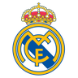
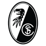
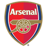

Her kademenin kendi olasılık bandı içindeki en yüksek seçimleri, her maç ve pazar türünden en fazla bir tane (yeni bültenlerde Sağlam %53–%72 · Dengeli %37–%53 · Cesur %20–%33; üst sınırı aşan çok güçlü favoriler girmez). Öneri değil, kademe olasılıklarının çoklu maç sınamasıdır.

Real MadridLa Liga · Çar 02.12 21:00 AlavesLa Liga · Cmt 28.11 23:00
AlavesLa Liga · Cmt 28.11 23:00 SC Paderborn 07 –
SC Paderborn 07 –  Schalke 04Bundesliga · Cmt 28.11 17:30
Schalke 04Bundesliga · Cmt 28.11 17:30
Freiburg – RB LeipzigBundesliga · Paz 29.11 17:30
RB LeipzigBundesliga · Paz 29.11 17:30 Torino –
Torino –  LazioSerie A · Cmt 28.11 20:00
LazioSerie A · Cmt 28.11 20:00 Çaykur Rizespor –
Çaykur Rizespor –  KasımpaşaSüper Lig · Cum 27.11 20:00
KasımpaşaSüper Lig · Cum 27.11 20:00
Arsenal – Man CityPremier League · Paz 29.11 19:30
Man CityPremier League · Paz 29.11 19:30 Gaziantep FK –
Gaziantep FK –  AmedsporSüper Lig · Cmt 28.11 19:00
AmedsporSüper Lig · Cmt 28.11 19:00 Espanol –
Espanol –  GetafeLa Liga · Pzt 30.11 23:00
GetafeLa Liga · Pzt 30.11 23:00